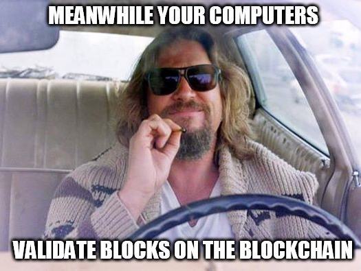

What The Fuck Is Ethereum?
TLDR: Ethereum is a computing platform running on computers all over the world. To run programs on the network you pay Ether (ETH); you can program on the Ethereum network using a language named Solidity.
Don't say fuck
Ethereum is a way for a bunch of computers to talk to each other. People can ask these computers to run programs that can't easily be shut down because all the computers share the code with each other.
If you want to run a program that takes a long time to finish, you have to pay the computers in the network a currency called Ether.
An unregulated, global financial market with a multimillion USD market cap, yes please!
Why would you want to create a scam using Ethereum? Well, because it's a financial wild west: unregulated, unsafe, and large enough you can hide in plain sight.
Ponzi Schemes
So, first-off let's talk about ponzi schemes. Ethereum executes smart contracts that allow you to strictly enforce the execution of a ponzi scheme with no oversight after people start buying in. The code will continue executing indefinitely.
Some researchers from Cornell University did extensive research to discover, classify, and analyze ponzi schemes running on the the Ethereum platform. I'll summarize their findings like this: those participating in the ponzi schemes were doing so knowningly.
From the PDF:
Still, it is foreseeable that, as Ethereum consolidates its position as a platform for smart contracts and as a cryptocurrency, criminals will exploit it to host their scams. Besides the growth of traditional Ponzi schemes accepting ether, we expect a second wave of Ponzi schemes, but very likely they will be less recognizable as such than the ones collected in this survey. For instance, they could mix multi-level marketing, token sales, and games, to realize complex smart contracts, which would be very hard to correctly classify as Ponzi schemes or legit investments.
Our analysis suggests that there is still time to devise suitable policy interventions, and provides a first understanding of the issues that must be tackled in this direction.
ICOs
An ICO stands for an "Initial Coin Offering", which is a way for anyone to raise money using the Ethereum platform. One would simply make a website stating what problem the company is trying to solve, they list their ICO on one of many websites.
As of June 2017, I'm going to keep ICOs on the "explain it like I'm a scammer page" because I don't believe there is enough accountability in the community surrounding 2 things:
- Truthfully stating what the company intends to accomplish.
- Being held accountable for producing results.
- Not overhyping their ICO using tactics like "IPCO windows" where the ICO launches at a specific date and ends at a fixed time.
Essentially, many regulations that exist in established financial markets were created for a reason. Not having some of these regulations leads to unsafe investments.
Know of some scammy behavior I didn't list here? Please email me.
Ethereum is kinda nerdy
But that's ok, so is the internet. It's not hard to understand though, so don't be scared by all of the jargon! Here are a few keywords to get started.
- Decentralized - computers located all over the world, working together, if half of the computers are turned off, the other half will continue operating as if nothing happened.
- Cryptocurrency - a kind of digital money that gets its value from having computers do hard math problems.
- Computing Platform - this is a fancy way of saying a network of computers that run programs together.
Ok! So now we're going to put all those terms together to try and explain what Ethereum is.
Ethereum is a decentralized computing platform that executes programs anyone can create. In order to pay for the computing power used to execute these programs you pay with a cryptocurrency called Ether.
So what, why do people care about Ethereum so much?
If you've heard about Ethereum it's probably for one of two reasons:
- Speculative investing - because you can buy Ether at places called exchanges and more and more people are buying Ether, less of it is available and so the price is rising. However, like buying stocks in the stock market where companies can have ups and downs, Ethereum could experience this too, and the Ether people buy could lose value very rapidly.
- Technological excitement - many people are excited about Ethereum because, much in the same way that the internet changed how everyone communicates, Ethereum has the potential to change how much of the world exchanges money, and organizes around trust.
Ok, so should I do anything about it?
Probably not right now, unless you're pretty nerdy or you understand how investing works (and have money to lose). Ethereum is too new a technology to worry about.
Raising Money on Ethereum Blockchain
So, elsewhere on this website I mention that ICOs are potentially scammy vehicles for unscrupulous fundraising. Conversely, token offerings can be used by companies that are indeed legitimate in order to raise money for their projects. Ethereum initially raised money to start the project itself using Bitcoin, and has gone on to build off the smart contract system intrinsic in it's own platform to allow anyone to create a token.
Wait, What are Tokens Exactly?
Tokens are a digital asset (specific to a particular project/company) that can be used like a currency, built on top of the Ethereum blockchain. In order to acquire a particular token you would exchange ETH for that token. Different tokens may have different contracts though, so not all tokens are created equally, but generally in an ICO tokens are being used like stocks, allowing you to own a portion of a company in exchange for ETH. The value of the token changes based on demand for that particular token, and you can convert your holdings of a certain token back to ETH by selling it on an exchange that lists ETH tokens (or in person). If you want to know more I highly recommend this blog post written by Linda Xie.
Existing Companies that have done ICOs
Resources For Going Deep:
This list of intermediate resources was taken from a Google Doc released by the organizers of the Ethereum Deep Dive hosted at UC Berkeley. I copied it to this website in the event the document becomes inaccessible. The expected read time for all this material was 5 hours.
Design:
- Design Rationale - "The purpose of this document will be to detail all of the finer potentially nonobvious or in some cases controversial decisions that were made in the process of building the Ethereum protocol, as well as showing the risks involved in both our approach and possible alternatives."" ― 36 minute read
- Yellow Paper - The technical Bible of Ethereum, a formal definition of the protocol, very math-heavy; a rigorous discussion of Ethereum’s "design, implementation issues, the opportunities it provides and the future hurdles" envisaged ― 54 minute read
- Mauve paper - Technical discussion of in-development scaling features of Ethereum, namely, a combination of proof-of-stake and sharding ― 27 minute read
- GHOST Protocol - Seminal 2013 paper that introduced the GHOST Protocol, of which Ethereum implements a simplified version, and which combats the security and centralization issues of fast block time blockchains ― 56 minute read
Economics:
- Monetary Policy - Analysis of cryptocurrency monetary policy possibilities to best meet objectives of network security, aligned incentives, and supply predictability ― 15 minute read
- Gas Economics - Explores the question, "does [the Gas Economics model] provide the right incentives and protections to miners, verifiers, clients, and the system as a whole?" Also explores "the ways in which Ethereum programs can be composed, with an eye towards managing the incentives and risks experienced by the cooperating/competing program authors." ― 55 minute read
Cryptography:
- ETHash - Formal specification for Ethereum’s GPU-friendly, ASIC-resistant proof-of-work hashing algorithm ― 8 minute read
- Analysis of ETHash - Thorough analysis, including overview and analyses of its design, feasibility, and randomizing functions ― 37 minute read
- Why Patricia Trees - Quick introduction to how merkle trees work, their present and future value for blockchains, and basic reasoning behind Ethereum’s "Merkle Patricia Tree" ― 9 minute read
- Patricia Trees - Detailed specification ― 8 minute read
Privacy:
- Privacy on the Blockchain - Discussion of how to increase privacy on the blockchain (cryptographically secure obfuscation, secure multi-party computation, low-tech approaches), and the future of privacy ― 20 minute read
Security:
- Oyente paper - Proposal for fixing security flaws in Ethereum smart contracts ― 52 minute read
Proof of Stake:
- Proof of Stake FAQ - Guided FAQ, best read in order ― 42 minute read
- Minimal Slashing Conditions - Explanation of slashing conditions that allow Casper, the protocol for Ethereum proof-of-stake, to achieve economic finality ― 14 minute read
- Understanding Casper - Explanation of Casper PoS Economics ― 20 minute read
- Casper, as I understand It - 3rd party analysis of Casper compared to Tendermint consensus ― 5 minute read
Sharding:
- Sharding FAQ - Another guided FAQ, best read in order ― 52 minute read
- Sharding v1 Proposal - Ethereum sharding specification ― 8 minute read
Other:
- Challenges - Explanation of the abundant technological, consensus-related, and economic problems the blockchain community has yet to solve ― 60 minute read
Ethereum for Artists & Creators
Some inspiration:
- Mine tokens with a 3D modelling rig - If you have GPU sitting around, it could make you money mining ETH.
- Sell digital goods - RAC will release their new album EGO via the Ethereum network on July 14, 2017. You could do something like this.
- Make a visualization of the blockchain that is easier for humans to read - Let's be honest ledgers are boring to look at, you could do something interesting to express market transactions within ETH.
Ethereum probably won't get you laid
Sorry not sorry. Yes, I'm probably jealous of all the fun you're having while I'm here writing content.
Imagine the Ethereum Network like a giant, global dispensary and farmer's co-op that nobody owns. Instead, members of the network pitch in the occasional bud (computer resources) when someone about to have a much bigger party (C++ developers, wizards, etc.) needs to borrow from the stash. These "parties" could be all kinds of things from distributed movie renderings to web applications.
Unlike bumming your friend smokes, however, or central banks, user of your "bud" is backed by "smart contracts" which ensure that participants of the Ethereum Network are compensated even if the party really sucked. This means more parties, bigger parties and better yet, parties which can't leave everyone broke.
The Dude abides...

Investing in Ethereum
There are 2 rules:
- Only invest money you are 100% willing to lose.
- Understand you are investing in a highly speculative, very volatile market.
Resources:
- My favorite online wallet/exchange is called Coinbase. It allows you to convert USD to BTC and ETH.
- I recommend the exchange POLONIEX for keeping track of individual ETH coins, and analysing the market.
- Coin Market Cap is a great resource for understanding overall value of a certain coins.
- If you are specifically interested in divesting from BTC and investing in ETH, check out The flippening.
Some Technologies Fail, Here's Why Ethereum Might
Vitalik Buterin (one of Ethereum's creators) acknoweledges Ethereum has looming issues which need to be solved:
- Scalability sucks; the blockchain design fundamentally relies on bottlenecks where individual nodes must process every single transaction in the entire network
- PoW is extremely expensive, and furthermore is fundamentally vulnerable to 51% spawn camping attacks with no effective strategy for recovering from one. Selfish mining is profitable starting at 25-33% hashpower, and 51% censorship attacks are definitely profitable.
- Privacy sucks
- It's hard for regular users to hold large amounts of funds without running substantial risks of theft or loss due to theft or loss of their private keys.
- Economics do not encourage good "storage hygiene"; insufficient incentives for clearing storage and insufficient cost for filling it, especially for long periods of time
- Bunch of various marginal technical inefficiencies.
Hopefully you like Tim Ferris—if you have reservations about his ideology, note this: in this podcast he asks both Nick Szabo (an academic) and Naval Ravikant (an investor) some pretty simple questions.
The questions they cover in the episode are the following:
- What is Bitcoin, what are cryptocurrencies, and what problem do they solve?
- What is "social scalability?"
- What is Ethereum and what makes it unique? Strengths and weaknesses?
- How will smart contracts actually get adopted or go mainstream?
- What are ICOs (Initial Coin Offerings)?
- Blockchain governance — is there any existential risk?
- "Wet" versus "dry" code
- Pascal’s scams
- Quantum thought
- What fields will you be working on in the future?